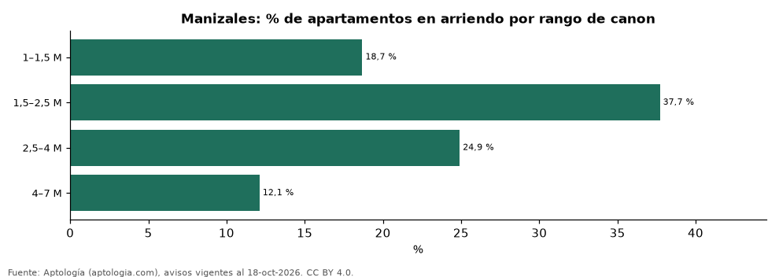

Qué apartamento se arrienda en Manizales en cada rango de canon: tamaño, m² y oferta (octubre 2026)
Estudio con datos abiertos (CC BY 4.0). Versión original: https://github.com/elbroker/aptologia-datos/tree/main/estudios/apartamentos-en-arriendo-por-rango-de-canon-manizales-2026 · DOI: 10.5281/zenodo.23512269
En Manizales, el rango de canon con más oferta de apartamentos en arriendo es 1,5–2,5 M de pesos al mes (37,7 % de los avisos), con un área mediana de 60 m². El 22,5 % de la oferta se pide en menos de 1,5 millones.
Resumen: clasificamos 289 apartamentos en arriendo en Manizales en seis rangos de canon mensual.
Actualizado: 18 de octubre de 2026 (datos del 18 de octubre de 2026) · Próxima actualización: mensual.

Resumen
| Indicador | Valor |
|---|---|
| Rango con más oferta | 1,5–2,5 M (37,7 %) |
| Menos de 1,5 millones | 22,5 % |
| Avisos | 289 |
Oferta, tamaño y m² por rango de canon
| Rango de canon mensual | % de la oferta | Área mediana (m²) | Canon por m² (mediana) | Habitaciones más comunes | Avisos |
|---|---|---|---|---|---|
| 1–1,5 M | 18,7 % | 50 | 25.926 pesos | 2 hab. | 54 |
| 1,5–2,5 M | 37,7 % | 60 | 29.936 pesos | 3 o más hab. | 109 |
| 2,5–4 M | 24,9 % | 76 | 41.333 pesos | 3 o más hab. | 72 |
| 4–7 M | 12,1 % | 138 | 35.088 pesos | 3 o más hab. | 35 |
Canon mensual pedido sin administración; rangos con menos de 30 avisos se omiten.
Preguntas frecuentes
¿Qué apartamento se arrienda con 2 millones en Manizales? Ver la fila 1,5–2,5 M: área mediana y habitaciones más comunes de esa franja.
¿Cuál es el canon más común en Manizales? 1,5–2,5 M de pesos al mes, con el 37,7 % de la oferta.
Metodología
- Fuente: exportes nocturnos de la base de datos de Aptología (aptologia.com) del 18 de octubre de 2026: avisos vigentes de vivienda en portales inmobiliarios de 13 países, recogidos por Aptología y vistos en línea entre el 11 y el 18 de octubre de 2026. Corte: 18 de octubre de 2026.
- Depuración: se eliminan duplicados exactos (misma ciudad, zona, tipo, precio, moneda, área, habitaciones y baños) y los precios fuera del percentil 1–99 de cada país, operación, moneda y tipo; el precio por m² usa solo avisos con área declarada entre 12 y 2.000 m² y también se recorta al P1–P99.
- Qué se mide: precios pedidos (publicados), no precios de cierre. En arriendo, el canon mensual sin administración, gastos comunes ni condominio.
- Muestra mínima: cada cifra publicada se apoya en al menos 30 avisos; las celdas con menos se omiten.
- Colombia: Precios en pesos colombianos, sin conversión de moneda.
- Limitaciones: la cobertura depende de los portales que recorre Aptología en cada país y es mayor en las ciudades grandes y en los segmentos medio-alto y alto; el área es la que declara el aviso, sin verificar; los nombres de zona vienen de los portales.
- Privacidad: solo se publican agregados; no se publica ningún dato personal, enlace a avisos ni nombre de anunciante.
- Datos abiertos: datos.csv, licencia CC BY 4.0.
Cómo citar
Pinzón Pineda, D. M. (2026). Qué apartamento se arrienda en Manizales en cada rango de canon: tamaño, m² y oferta (octubre 2026). Aptología (aptologia.com). https://github.com/elbroker/aptologia-datos/tree/main/estudios/apartamentos-en-arriendo-por-rango-de-canon-manizales-2026. Datos: datos.csv, licencia CC BY 4.0.